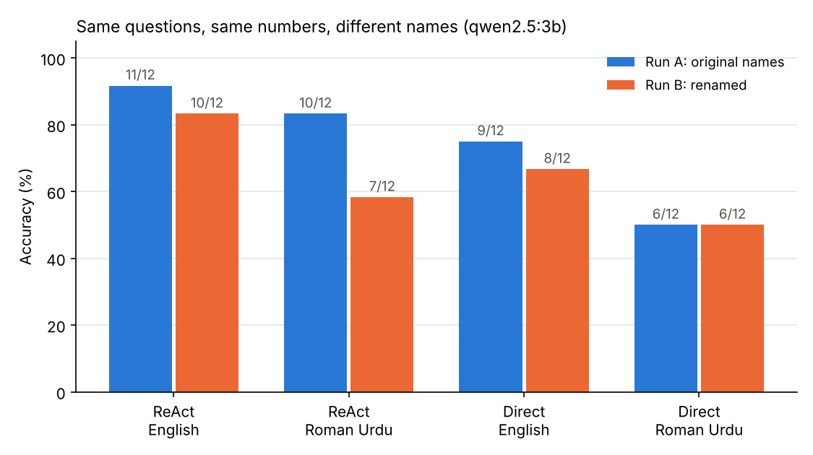

Research note · Agentic AI · Clinical NLP
Can a small local AI agent understand Roman Urdu?
What a simple name swap revealed about small AI agents
By Muzammal Hussain · 18 October 2026 · 6 min read
Millions of people in Pakistan type Urdu in Latin letters: "Maryam ke kitne sessions baqi hain?" This is Roman Urdu, and it is how many patients, receptionists and clinicians actually message each other. Yet AI agents are mostly designed and evaluated in English. I wanted to know whether a small agent running entirely on a laptop could handle the same clinic questions in both languages, and whether the answer would hold up when I tested it a second time.
Key findings
- The agent beat the one-shot baseline in every condition, mainly because it hands arithmetic to a calculator tool.
- The Roman Urdu result was not stable. Changing only the patient and therapist names dropped the agent's Roman Urdu accuracy from 83% to 58%. English moved by one question.
- The Roman Urdu failures were language errors, not tool errors. "5 saal baad" (in five years) became a subtraction, and "mila kar" (combined) became a difference.
- A small agent can still invent facts inside the loop. It skipped a lookup and made up a therapist's specialty.
Background: the ReAct pattern
ReAct (Yao et al., ICLR 2023) is one of the most influential ideas behind today's AI agents. Instead of answering in one go, the model works in a loop:
- Thought: "I need this patient's record first."
- Action: call a tool, for example a database lookup.
- Observation: read what the tool returned, then think again.
It resembles how a clinician works: reason, order a test, read the result, decide the next step. The paper showed that grounding answers in tool results reduces made-up facts compared with "think step by step" prompting alone. Its experiments, however, were in English and its prompted results came from very large models (PaLM-540B and GPT-3). Whether the pattern transfers to small local models and to code-mixed languages such as Roman Urdu was not tested.
The experiment
- Model: qwen2.5:3b, run locally with Ollama on a MacBook M4 (16 GB). No data left the machine.
- Data: a small fictional physiotherapy clinic with 6 patients and 3 therapists. Fictional data forces the model to use its tools instead of memory. No real patient data was used.
- Questions: 12 questions needing one to three lookups, such as "What is the average current pain score of Dr. Robina's patients?". Each was asked in English and in Roman Urdu with the same correct answer.
- Tools: patient lookup, therapist lookup and a safe calculator.
- Baseline: the same model with the whole database pasted into the prompt, answering in one shot without tools.
- Robustness check: I ran everything twice. Run B kept the questions, numbers and answers identical and changed only the names. If the agent truly reasons over its tool results, names should not matter.
Results
| Method | Language | Run A | Run B (renamed) |
|---|---|---|---|
| ReAct agent | English | 11/12 (92%) | 10/12 (83%) |
| ReAct agent | Roman Urdu | 10/12 (83%) | 7/12 (58%) |
| Direct answer | English | 9/12 (75%) | 8/12 (67%) |
| Direct answer | Roman Urdu | 6/12 (50%) | 6/12 (50%) |

The agent was consistently more accurate than the direct baseline, but at a cost: about 3 seconds per question against 0.16 seconds, roughly 20 times slower. The largest movement between runs was the agent on Roman Urdu, which lost three questions when only the names changed.
What went wrong
Because every step of the agent is logged, each failure can be traced. Three Roman Urdu examples stand out.
- "5 saal baad" read as "5 years ago". Asked how old a patient will be in five years, the agent correctly found the age (38), then called
calculate[38 - 5]and answered 33. - "Mila kar" read as "difference". Asked for two therapists' combined experience, it found both values (6 and 8), then computed
6 - 8and replied that one therapist has two more years. - An invented fact. Asked for a patient's therapist and their specialty, it read only the patient record, never looked up the therapist, and answered "Orthopedics", a specialty that does not exist anywhere in the data.
In the first two cases the tools worked perfectly; the model chose the wrong operation because it misunderstood the Roman Urdu wording. The third case matters because the ReAct paper's own error analysis found no hallucination among the agent's sampled failures. With a 3B model, the loop alone did not prevent it.
One failure appeared in both runs: in English, the agent sent a patient's name to the therapist lookup, received "not found" and answered "No information available" instead of trying another route. In a clinic, "I don't know" is the safer kind of failure, since a confident wrong number can harm a patient. But the invented specialty shows that abstention cannot be relied on.
What this means for clinical AI
I am building MeetPhysio, an AI clinical documentation assistant with a local-model mode. Running the model on the clinician's own machine keeps patient data private, which matters under UK data protection law. This pilot suggests three practical requirements for local agents in multilingual clinics:
- Evaluate in the patient's language, with several phrasings and name sets, not one English test.
- Require evidence for every fact in the final answer, so a claim without a matching tool result is blocked.
- Choose the workflow to fit the speed: a few seconds per step is fine for drafting notes after a consultation, but too slow for live conversation.
Limitations
This is a small pilot, not a final result. Each condition has 12 questions, so one question equals 8.3 percentage points and no confidence intervals are possible yet. I tested one model with one setting, the renamed run also changed the names in the prompt example, the Roman Urdu was written by one person, and the database was tiny. The name-swap effect is a warning sign, not a measured effect size.
Next steps
- Expand to 50+ questions with several name sets and spelling variants each, and report the mean and spread.
- Build a targeted set for Roman Urdu time and arithmetic words such as "baad", "pehle", "mila kar" and "farq".
- Compare two or three local models and a Roman Urdu prompt example.
- Test an evidence guard against facts that no tool returned.
Reference: Yao, S., Zhao, J., Yu, D., Du, N., Shafran, I., Narasimhan, K. and Cao, Y. (2023). ReAct: Synergizing Reasoning and Acting in Language Models. International Conference on Learning Representations (ICLR). arXiv:2210.03629